|
Configurable Multiagent System for Plug&Produce
CMAS
|
|
Configurable Multiagent System for Plug&Produce
CMAS
|
There are two major tasks for CMAS to handle:
Configuration is the task to describe for CMAS what you want to achieve and is a planning activity. The configuration can mainly be divided into some basic activities:
| Activity | Action | Where |
|---|---|---|
| Add resources | When new resources have been acquired | Modelling tree |
| Add parts | Introduction of a new type of product | Modelling tree |
| Specify goals | Whenever you want to add or modify a part | On parts |
| Specify process plans | Whenever you want to specify or modify how a specific goal is achieved | Process plans |
| Specify skills | When a skill is added or modified | On resources |
A good configuration approach is crucial when it comes to a configurable multi-agent system. The configuration is based on an ontology model. To understand how to make a configuration we will start with a small example.
Let’s say we want to transform a metal plate into a name tag, see figure below.
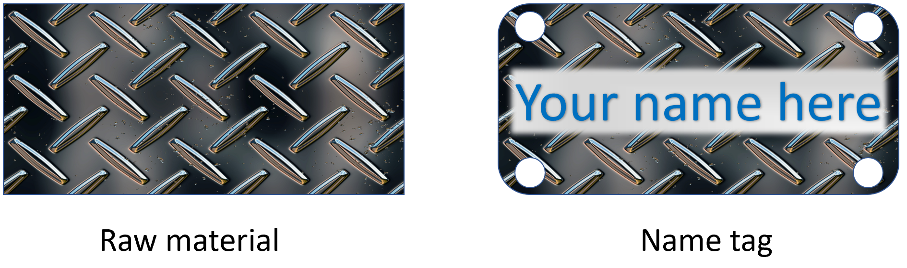
The first step is to create a virtual representation in the system for the raw metal plate – this is called a part agent. The part agent will represent the raw metal part and its transformation to a name tag. The transformation includes getting smooth corners, 4 drilled holes and a printed name on the plate and can be expressed as goals. Therefore, all part agents have goals, and goals allow part agents to dynamically schedule a sequence of subgoals to satisfy the overall goal to become finalized, in this case, a name tag. A goal should describe a desirable state for the part agent. In this example the overall goal for the part agent to become a name tag can then be divided into these goals:
| # | Goal | Precondition |
|---|---|---|
| 1. | Get rounded corners | None |
| 2. | Get hole in the NE corner | Goal 1 is finished |
| 3. | Get hole in the NW corner | Goal 1 is finished |
| 4. | Get hole in the SE corner | Goal 1 is finished |
| 5. | Get hole in the SW corner | Goal 1 is finished |
| 6. | Get a printed name | Goal 2 & 3 & 4 & 5 is finished |
The order of the goals is important in this scenario, goal 1 can be reached whenever since it does not depend on any other goals. Goals 2, 3, 4 and 5 can only be reached after goal 1 is finished but can be reached in any order or even in parallel and finally goal 6 can only be reached at the end when all other goals are finished.
A part agent must be able to reach its goals. A process plan simply describes a sequence of skills to be used to reach a specific goal. Hence, a process plan assists in transforming a part agent from a state to another state where the specific goal is fulfilled. See the figure below for an example of a process plan to get rounded corners.
| Step # | Skill |
|---|---|
| 1 | Grind corner NE |
| 2 | Grind corner NW |
| 3 | Grind corner SE |
| 4 | Grind corner SW |
To be able to manufacture a name tag we need resources. A resource agent is a virtual representation of a resource in the manufacturing system. A typical resource might be a robot, a drill bit or a fixture. Every resource agent can be assigned one or several skills (abilities). A skill represents a way to do something (change the state of the world) and is published as a service through an interface on the specific resource agent. Examples of skills might be transportation, painting, or drilling. A resource might have several skills, e.g., a robot could represent both painting and transportation. A skill might require other skills on other resources to be able to execute. An example might be a make hole skill on a drill bit resource that requires a drill skill on another resource. This chain of skills is a key element to get the system more flexible. A skill is described as a sequence of local actions and remote skills executed in a specific order, see figure below for an example of a skill called make hole.
| Step # | Action/Skill | Resource involved |
|---|---|---|
| 1 | Move to the target position | Executed on robot |
| 2 | Start Drill motor | Executed on Drill motor |
| 3 | Stop drill motor | Executed on drill motor |
| 4 | Move home | Executed on robot |
To be able to do a real configuration of the scenario described above lest create a small simplified example for the goals to make holes in the name tag. The manufacturing processes consist of a drill station with its related drill bits. Let us start with a small principal design of the agents that we want to model. We divide the resources into two different resource agents, DrillBit and DrillStation. We also need one part agent representing the name tag to be manufactured.
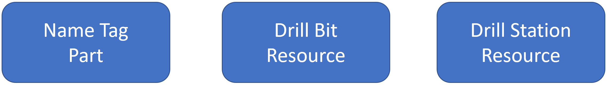
Now start the CMAS tool, it should look something like this.
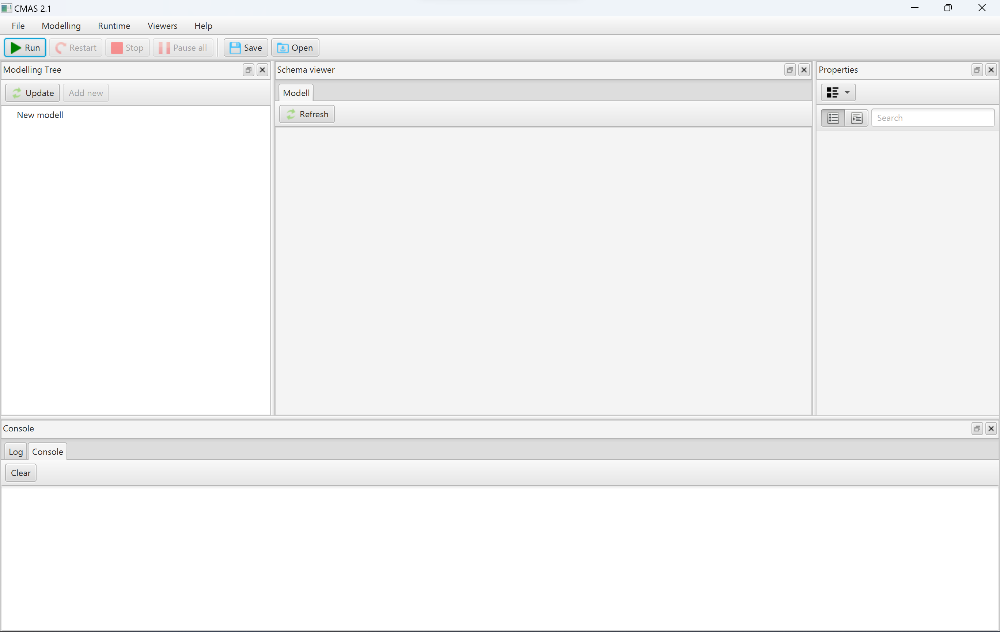
The first thing we need to do is to add a Resource agent. In CMAS to the left you can see the modelling tree view. Click the [Add new] button in the modelling tree view. A new dialogue window will now ask you what type of entity to add. Select Resource from the list and press [OK]. When the new entity is created it is added to the modelling tree and selected. You can see all properties of an selected entity to the right in the properties view. To be able to find our new resource in the system we need to give it a friendly Name, lets name it DrillBit. You can change the name by navigating to the properties view and replace the automatically generated name with DrillBit. Further, it is also possible to give a more detailed description of the resource in the Description. The Entity ID is a unique string used by the platform to keep track of our agents during runtime. It is possible to give Entity IDs manually but usually it is best to let the system decide an Entity ID automatically.
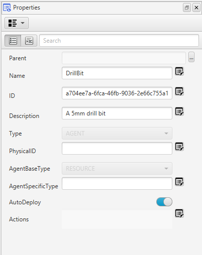
The next step is to give our drill bit agent interfaces. An interface represents a way for an agent to interact with other agents and is also used to check for compatibility. Our drill bit needs to interact with two other agents, the name tag and the drill station. Hence, we need two interfaces, the first to be able to drill a hole in a part and the second to be able to utilise a drill for rotation of the bit (our self). First, create the Interface to interact with parts. To do this expand the DrillBit resource in the modelling view and select the relation Interfaces. When the Interfaces is selected press the [Add new] button in the window to create a new interface. While the new interface is selected in the modelling tree view go to the properties view and change the name to Hole. To reflect the size of the hole we need a variable. On the Hole interface let's create an Interface variable named Diameter. To add variables to an Interface expand the interface in the modelling view and select the relation variables. When the relation variables is selected press the [Add new] button in the window and create a VariableReal variable. Now go to the properties view and change the name to Diameter, also set the UpperBound and LowerBound to 5.0 to represent a diameter of exactly 5 mm. Our drill bit interface is now compatible with holes that have a diameter of 5. I.e., the interface information is used to check for compatibility the Name of the interfaces must match and then all the Variables types plus their range (UppeBound / LowerBound). Further, a hole also has a position lets create two more Interface variable called x and y and set the type to VariableReal. We do not give a range here, hence, any range will be compatible with these variables.
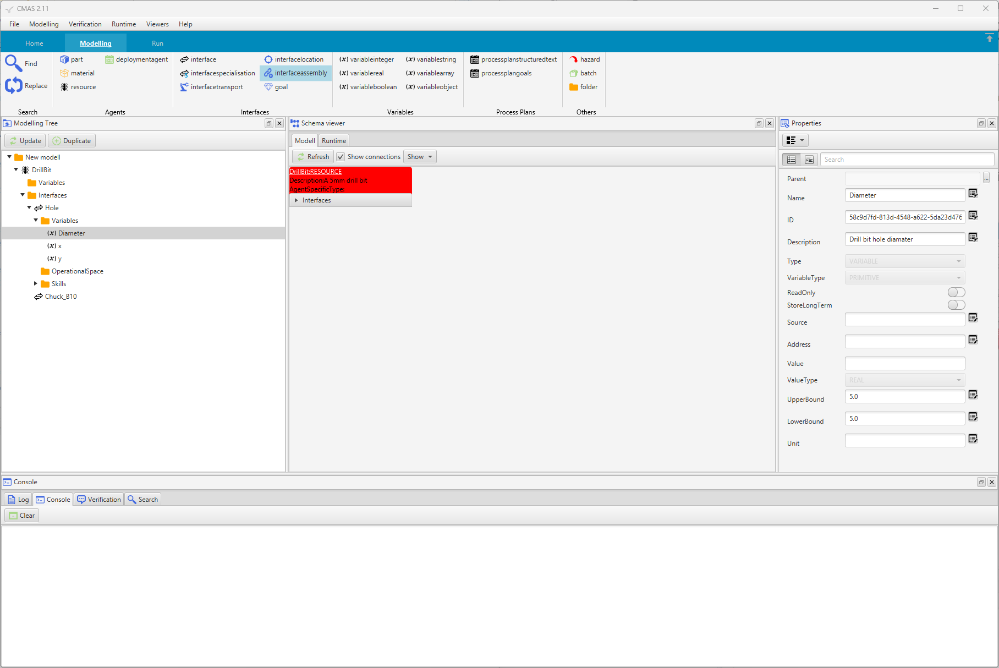
We also need to create a Skill on the Hole interface. A skill represents an action that other agents can use to change the state of the world, in this case to make a hole by the use of our drill bit resource agent. Now select the Interface Hole and select the relation Skills. Click the [Add new] button and select Skill Structured Text. Go to the properties view and name the new skill MakeAHole. We can leave the other skill details for now and come back to them later.
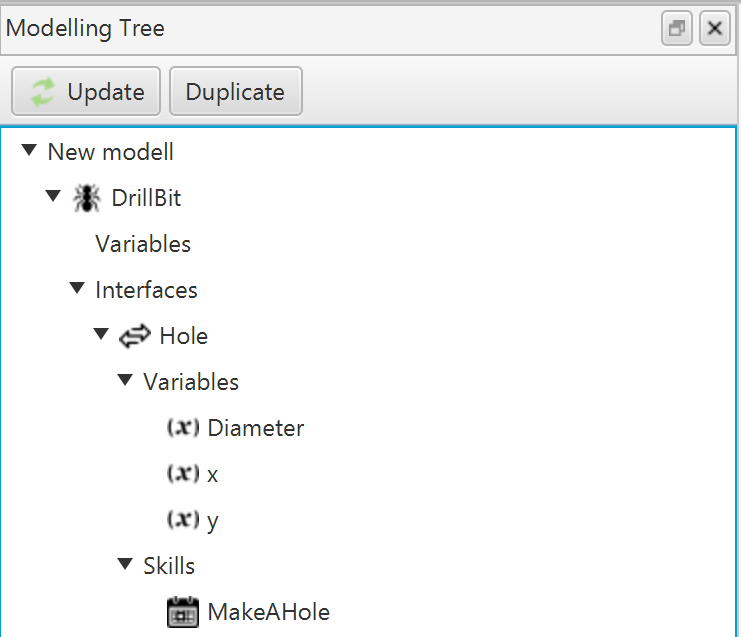
The DrillBit by itself cannot make a hole since it cannot rotate nor fixate. Therefore, it must utilise another resource, a drill of some kind. To be able to interact with a drill we need an interface. Let us, therefore, create a new interface named Chuck_B10 on the resource. Remember that the DrillBit agent knows the position of the hole through the first interface but cannot make use of it. Therefore, the hole position must be transferred to the drill. For that reason, add two Interface variables to the Chuck_B10 interface namely, x and y. The DrillBit agent is now configured. It is now possible to create many drill bits in the same way representing different chucks or hole diameters. Our configuration can now be visualised in a figure.
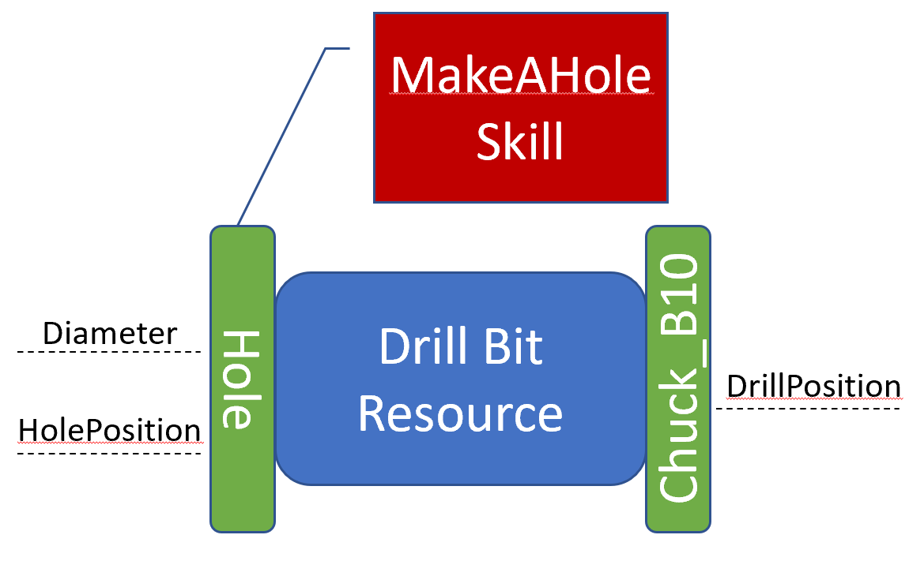
Now create a drill station as a Resource Agent with a compatible interface to our drill bit Chuck_B10 with two Interface variables named x and y. Also, create an empty skill named Drill on the same interface.
Now when the resources are ready the next step is to create a Part agent that will be the virtual representation of the product, name tag. To add a part agent select the root in the modelling tree and press [Add new] and select Part. Change the name to NameTag for our new part.
On the Part agent we need to create four holes each hole will be expressed as a Goal. A Goal is something a Part agent will try to fulfil by utilising Process plans and/or Skills. To add a Goal expand the Part agent in the modelling view and select the relation Goals and click [Add new] in the window. Change the name of the new Goal to Hole1. To reach the goal we need to name a good Process plans. To do this select the button [...] behind the ProcessPlanName to get a list of available process plans and select MakeAHole. Now we have a Goal to get a hole but we also need to give information on where we want the hole.
To do this we need to create Goal variables. Expand the Hole1 in the modelling tree and select Variables and the click the [Add new] button. Now create two VariableReal variables and name them x and y. For x set the Value to 3 and y to 5. Further, also create a variable called Diameter and set the Value to 5.0. In this way, we create a demand for our Part agent to only consider a hole with a specific diameter of 5.0. In the same way, as we added Interfaces to our Resources we now need to add an interface on our Goal. In the properties view for the goal click the button [...] behind Interface property. You should now get a list of available interfaces. Select the Hole interface in the list.
Now, in the same way create three more goals with the same variables but with different values. This can be done by selecting Hole1 in the modelling view and press [Duplicate] button. You will now get a copy of the Goal Hole1 and you can easily rename it to Hole2 and set new values for x and y. To easier see the difference between all goals you can give more details in the Description field. The Part agent is now ready and should look something like this.
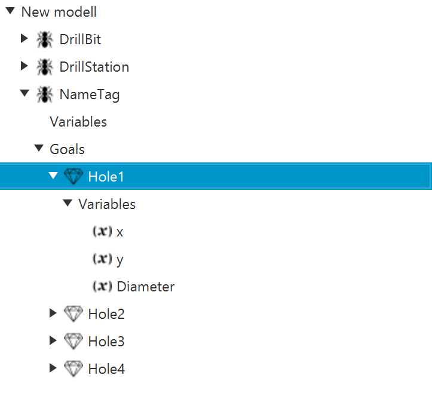
A Process plan is a description on how to reach goals. Process plans can be created on many different levels but for now let's focus on the part NameTag. Select the NameTag in the modelling view and in the properties view you can open the ProcessPlan editor by pressing [Edit].
A new editor will open.
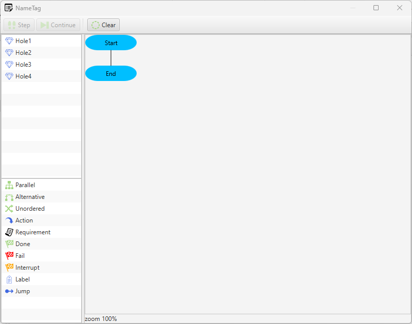
The start and the end of the ProcessPlan is indicated in the editor. It is now possible to drag the Goals from the goal view in to the editor. However, since there is no specific order of the 4 holes we can say to the system that any order is valid. To do this drag the Parallel statement from the statement view and drop it on the start statement. The parallel statement will then be inserted after the start statement.
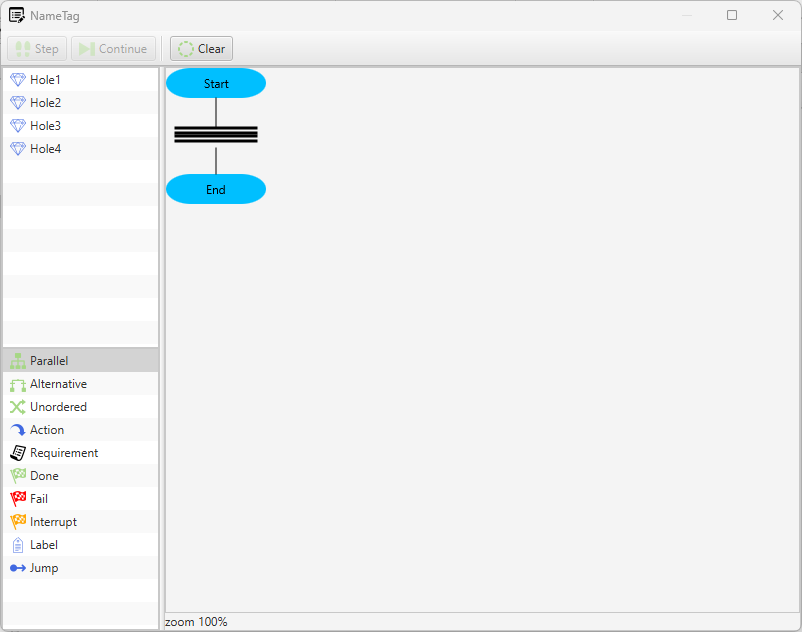
The Parallel statement is now visible as some parallel lines. Now drag each Goal in the goal list and drop them on the top line of the Parallel statement.
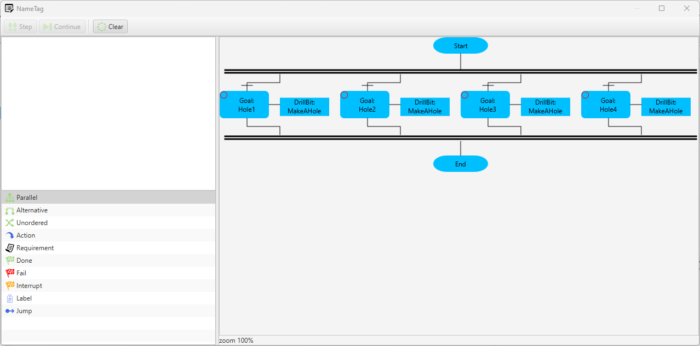
The editor now shows all 4 goals in parallel. It is also possible to see and change the name of each goal and the interface name and the requested process plan name in the editor. Now close the editor.
We also need to define the skill for MakeAHole on the DrillBit agent. To do this select the skill MakeAHole in the modelling view and in the properties view press the button Actions. The process plan for the skill is now visible, this is a Structure Text process plan. We now have the flexibility to describe in Structure Text what we want to achieve. This is an alternative to the Goal oriented process plan used for the part.
What we need to do is to add actions on how to drill with the bit. The drill bit need another resource to be able to make a hole, i.e. the drill bit by it self cannot make a hole. That resource must have an interface that is compatible with our interface. However, we do not care about which resource it is at this planning stage we just want it to be a resource interface that we can use. This unknown but required interface we can refer to as an abstract interface and all abstract interfaces must be declared at the top of a process plan. To be able to refer to this abstract interface in our process plan we give it a name when we declare it. It is possible to declare as many abstract interfaces as we wish in a process plan but for this plan one is enough. In the main block in-between Begin and End we need to give the details on what we want to accomplish and how to make us of our abstract interface.
The position of the hole is something that we need to give when we ask for the skill MakeHole. We can do that by assigning the position from the goal (Goal.x) to the skills interface variable. However, since we have declared all variable on the interfaces all values are transfered automatically.
An abstract interface is a way to describe what kind of resource we need without a hard link to a specific resource.
Now it is possible to use the abstract interface and start a skill by using the abstract interface.
You can now close the editor for the skill MakeAHole.
Now we need to do the same for the Drill station to define a skill.
The action for the skill Drill on the DrillStation is to now move the spindle to the right position and and start the spindle. To simplify we only write some messages on the console with writeln. Note, that it is indeed possible to control a real drill station within the skill or to send messages/set signals to a controller.
Our configuration should now look something like this and this is now our flexible control system.
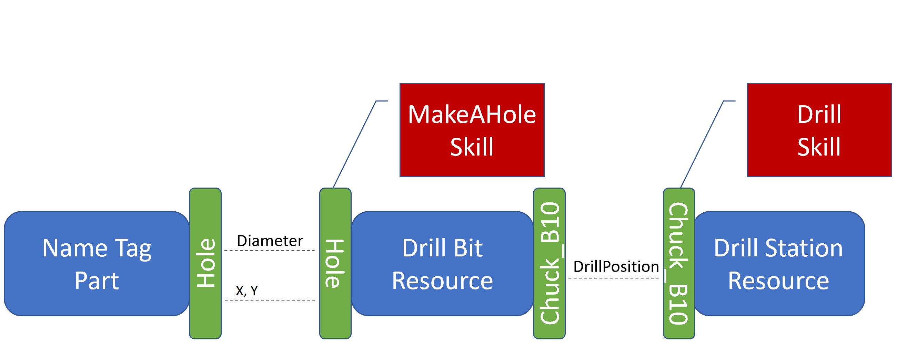
We are now ready to test our configuration in the runtime environment. By pressing the [Run] button on the main tool bar instances of our configuration will be transfered to the runtime environment. A new runtime tree viewer will open to visualise the runtime environment. The tree is divided in three different areas the first is called Depot. This is an area where agents that are ready to deploy will remain until they are deployed manually, automatically by CMAS or by user logic.
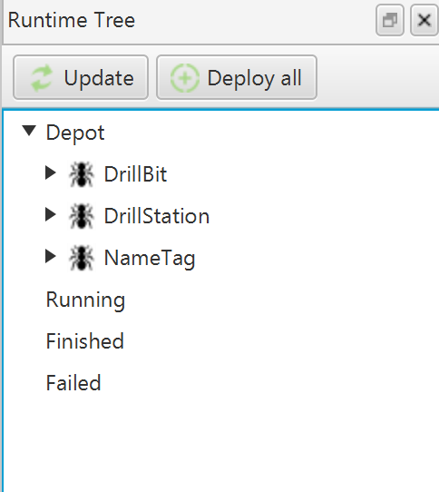
We are now ready to deploy our three agents and can do that by pressing the [Deploy all] button in the runtime view. If you want to deploy each agent individually right click on the agent a chose deploy. When an agent is deployed it will move to the running area.
In bottom of CMAS you should have a console window that display user outputs from agents. With our writeln call inside the skill Drill we should now be able to see that the drill will produce 4 holes. When a part agent has reached all goals it will be moved to the finished or failed area depending on the result. You can expand the finished area to see the part and check that all goals has become ready and green.
It is now possible to produce as many name tags as desired by deploying new NameTag agents with the [Deploy all] button. To stop the runtime environment press the [Stop] button.
Of course it is possible to add print outs for other activities to see what´s going on. Print outs is one way to see activities in the system. An example of the process plan GetHole with print outs: